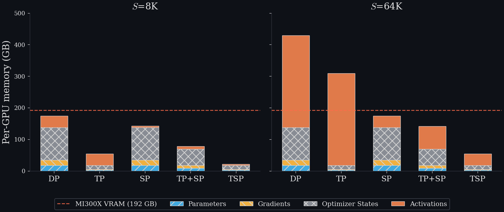
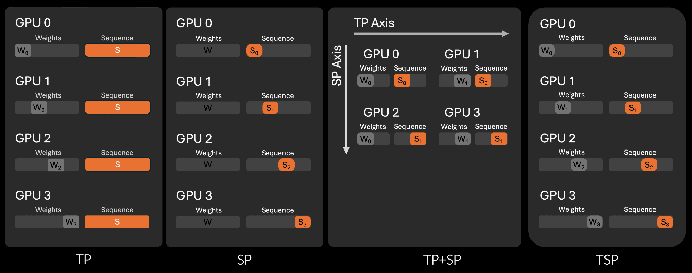
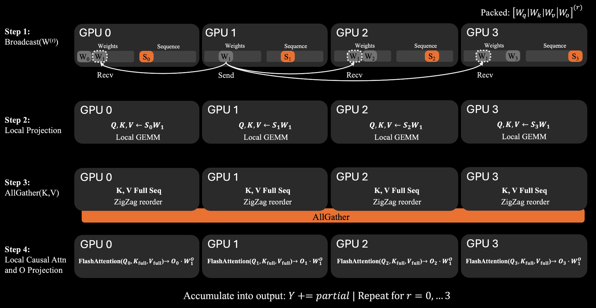
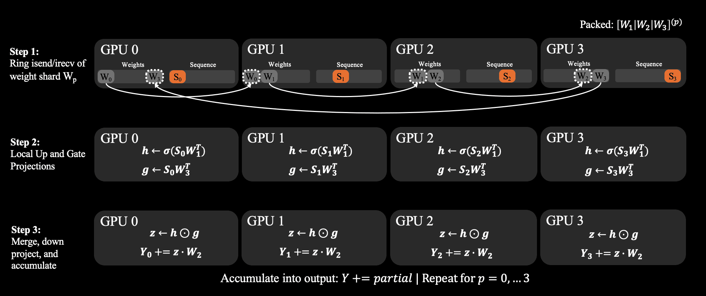
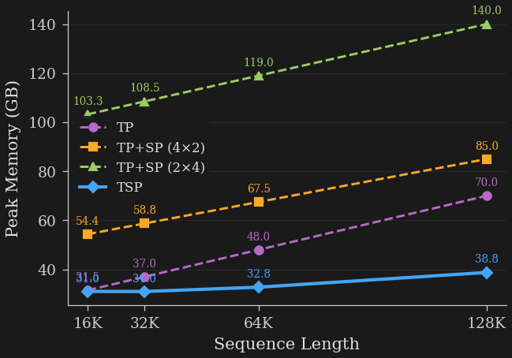
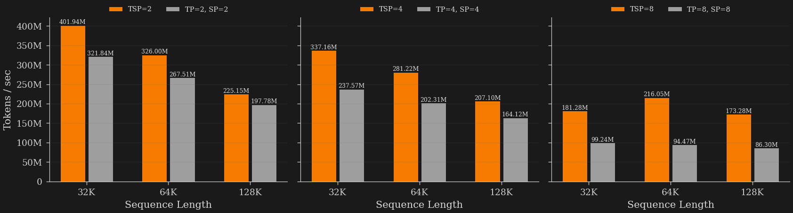

Zyphra提出张量与序列并行（TSP），一种用于训练和服务长上下文Transformer模型的新型并行分片策略。TSP将张量并行（TP）与序列并行（SP）"折叠"到同一条设备轴上，在单个并行组内同时分片模型权重和输入序列，从而大幅降低每GPU峰值内存，让更大模型、更大批次在给定拓扑下得以容纳。
随着模型规模和上下文长度增长至数万亿参数和百万级上下文长度，GPU内存已成为模型训练和推理的核心瓶颈。大规模训练或服务模型通常需要组合多种并行形式。
张量并行（TP）跨GPU分片模型权重，降低模型参数的内存成本，在训练中还包括梯度和优化器状态，但每个分片块需要额外的通信开销。序列并行（SP）跨GPU分片token序列，降低每个GPU的激活内存和KV缓存，实现长上下文训练和服务。
由于TP对模型权重进行分片但不影响激活，因此在模型权重为主要瓶颈时极为有效，但在上下文变长、激活内存变得可观时，其有效性会下降。相反，SP对激活进行分片，因此擅长支持长上下文，但无法解决通常较大的参数和优化器状态内存的"固定成本"。因此，TP和SP高度互补：TP分片参数，SP分片激活。
然而，在标准的多维并行设置中，TP和SP被分配到设备网格的不同维度。沿一个维度对参数分片，沿正交维度对序列分片。这意味着同时使用TP和SP会消耗秩数的乘积：即，当TP度为T、SP度为S时，组合的模型并行组需要T x S个设备。
由于设备总数固定，这种策略代价高昂。将更多秩分配给TP和SP，相应地留给数据或其他并行的副本就更少。此外，如果TP和SP的度都很大，它们的乘积可能无法容纳在单个节点的高带宽互连域（AMD Infinity Fabric或NVLink）内，而被迫使用较低带宽的节点间互连（如以太网或InfiniBand），这会加重网络带宽压力，增加通信与计算重叠的难度，最终可能降低训练迭代时间或推理吞吐。
TSP的核心洞察在于，我们可以将TP和SP"折叠"到同一设备轴上。具体而言，不再在设备网格的正交维度上分配T x S个秩，而是只使用单一维度，并为其分配N个秩，其中N是T和S中的较大者。
通过将TP和SP组合在单个GPU上，TSP大幅降低了每GPU的峰值内存，使得在给定拓扑内可以容纳更大模型，或者允许使用更大的批次或更少的并行度。然而，TSP的代价是额外的通信，因为每个GPU在每次前向和反向传播中基本上都必须执行TP和SP两种通信策略。但我们表明，在许多实际场景中，TSP的收益明显大于这些代价。

TSP同时赋予每个GPU两项职责：
它拥有模型权重的分片。
它拥有输入序列的分片。
因此，在一个D路TSP组中，每个GPU同时存储模型状态的1/D和激活序列的1/D。这使TSP拥有结合TP和SP的内存特征，而无需D × D的二维布局。
然而，这种策略需要额外的通信。如果每个rank只拥有部分权重和部分序列，那么参数和激活必须同时被正确收集和分片。TSP通过两个通信调度来实现：一个用于注意力，一个用于MLP。

对于注意力，TSP循环遍历权重分片。每一步，一个rank将其打包的注意力权重广播给组内其余成员。然后每个GPU在自己的序列分片上计算本地的Q、K和V投影。K/V张量沿序列维度进行all-gather（全收集），使每个rank都能为本地token重建完整的注意力上下文。

对于门控MLP，TSP使用环形调度。权重分片在rank之间循环传递，同时每个GPU在本地累积部分输出。这消除了MLP中标准张量并行all-reduce的需求，并使通信模式更容易与GEMM计算重叠。

我们在MI300X训练集群上评估TSP，并与张量并行、序列并行以及传统的TP+SP基线进行对比。
首先，我们在单个8-GPU节点上比较每种策略在不同序列长度（16K到128K token）下的单设备峰值内存。TSP在所有测试策略中实现了最低峰值内存。在16K token时，TSP和TP几乎相同，每GPU分别使用约31.0 GB和31.5 GB。这是意料之中的，因为在短上下文长度下，激活内存很小，权重是主要瓶颈。然而，随着序列长度增长，纯TP策略的激活内存不受阻碍地增长，而TSP以SP的小得多的速率增长。这在128K token时非常明显。TSP每GPU使用38.8 GB，而TP为70.0 GB，测试的TP+SP分解配置为85.0 GB / 140.0 GB。

在短上下文场景中，权重相关内存占主导，TSP与TP保持接近；当激活值成为主导时，TSP在长上下文场景中与TP日益分化。TSP继承了TP在短上下文下的低内存和SP在长上下文下的低内存，而无需传统TP+SP所需的二维设备分配。
TSP在大规模下也保持强劲吞吐。我们在128个完整节点（即1024个MI300X GPU）上进行测试。TSP在32K–128K上下文长度内优于匹配的TP+SP基线，并且优势在更高的折叠度下扩大。在高并行度（D=8）和长上下文（128K序列长度）下，TSP达到173M tokens/sec，而匹配的TP+SP基线为86M tokens/sec，速度提升超过2倍。

TSP的一大优势是减少权重和激活的复制。上述结果表明，在长上下文和内存受限场景中，消除复制可能比最小化通信量更重要，尤其是当通信发生在高带宽节点内链路且可与计算重叠时。
需要指出，TSP并非银弹，也不旨在取代所有现有并行策略。它只是在设计空间中新增了一个点。只要并行预算会迫使模型并行组跨越慢速链路，TSP就可以作为灵活轴插入，因此它是有用的并行方案补充，并便于针对未来或未知硬件拓扑进行优化。
TSP还能与专家并行、流水线并行和数据并行等多维并行轴正交组合。随着上下文长度持续增长、内存压力成为首要约束，我们认为TSP这类并行方案将日益重要。
完整的FLOP与通信量推导、理论建模、算法细节及详细基准测试结果，请参阅arXiv上的技术报告。
参考：https://www.zyphra.com/our-work/tsp